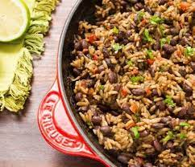

Gallo pinto

The Gallo Pinto is a traditional central american dish made from rice, beans and spices such as sweet pepper and lizano sauce.
Ingredients
- Cooked Rice
- Beans
- Salt
- Sweet Pepper, Tomato, etc
Steps
- Add the beans along with any desired spices first into a pan.
- Add rice accordingly.
- Mix with Lizano Sauce and other spices.
- Serve.